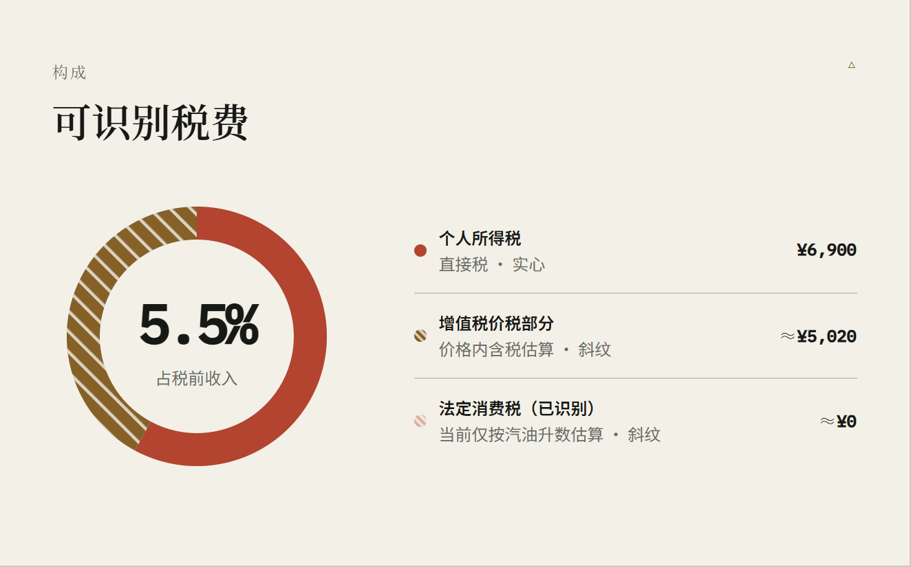

界面重构 · 执行结果
可读性修好了,
结构也跟着理顺了。
本次重构覆盖阶段一至阶段三,共修改 4 个源文件。计算逻辑、税率规则、测试用例零改动。以下是程序化审计结果与三个关键页面的前后对照。
1,161重构前 · 小于 12px 的文本节点
0重构后 · 小于 12px 的文本节点
4.51:1重构前最低文字对比度 → 现 4.71:1
19 / 19单元测试保持全绿
对照 01 · 年度账单
首屏从六个等权指标收敛为四个 + 明确引导
- 字号:141 处小于 12px 的文本全部消除,页脚 6px 提到 12px。
- 主次:指标卡由 6 个减为 4 个;「总可识别税费」「个人缴费(非税)」移到主数字旁作为结论行。
- 引导:新增「下一步」行,直接通往单笔拆解、一生推演、条件对比。
- 口径:切换器前加上「口径」标签,三个按钮补齐 aria-pressed 与悬浮说明。
对照 02 · 规则与来源
小字号重灾区,246 处降到 0
- 表格:计算方法、计税依据、法定纳税人、来源链接全部提到 12–13px,长表格第一次真正可读。
- 年份切换:按钮由 8px 提到 13px,并保留「2030 待规则」的禁用说明。
- 方法论:三条边界说明由 10px 提到 13px。
对照 03 · 年度账单导出件
导出长图同步受益
- 页脚:6px 提到 12px,并改为可换行,窄屏不再挤压。
- 类目列表:固定列宽由 80px 调整到 104px / 92px,容纳放大后的文字。
- 配色:导出件内的硬编码色值同步替换为新对比度色,与主站一致。
交互改动 · 未能用静态图呈现
导航、参数面板、图表无障碍
- 导航:9 项平铺改为「概览 / 场景 / 推演 / 依据」四组,其中两组为下拉菜单;移除与头部按钮重复的「账单」入口。1440 → 375px 全断点零横向溢出,导航条不再需要横向滚动。
- 参数面板:30+ 项表单墙改为「收入 / 缴费 / 消费 / 单位」四组切换,顶部常驻实时影响预览(如 5.5% → 9.9%,+4.3 个百分点),底部显示填写进度。
- 金额输入:失焦时显示千分位(18,000),聚焦时回到纯数字,避免光标跳位。
- 图表无障碍:环形图由 CSS
conic-gradient 重写为 SVG,补 role="img" 与完整数据 aria-label,并附屏幕阅读器可读的明细表;估算类目改用斜纹第二重编码,不再只靠颜色区分。
彩色实心 = 直接税 · 斜纹 = 估算

- 灰度对照是验收清单里的一条:即使黑白打印或色觉障碍用户,也能靠填充纹理分辨「精确的直接税」与「估算的价格内含税」。